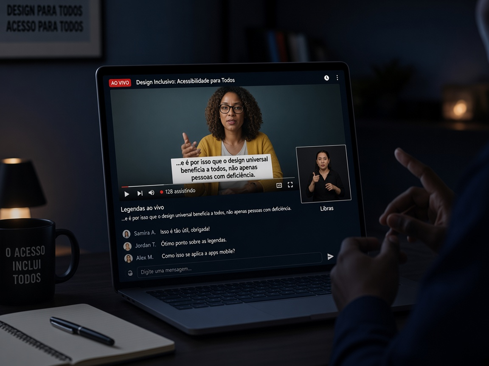
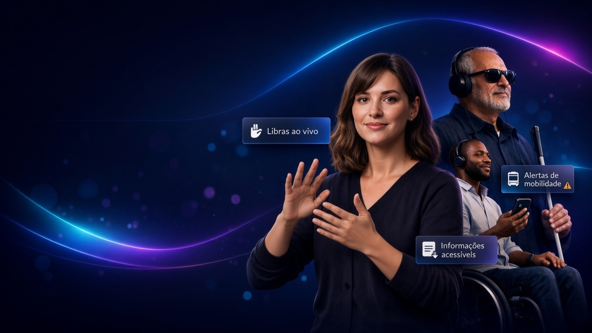
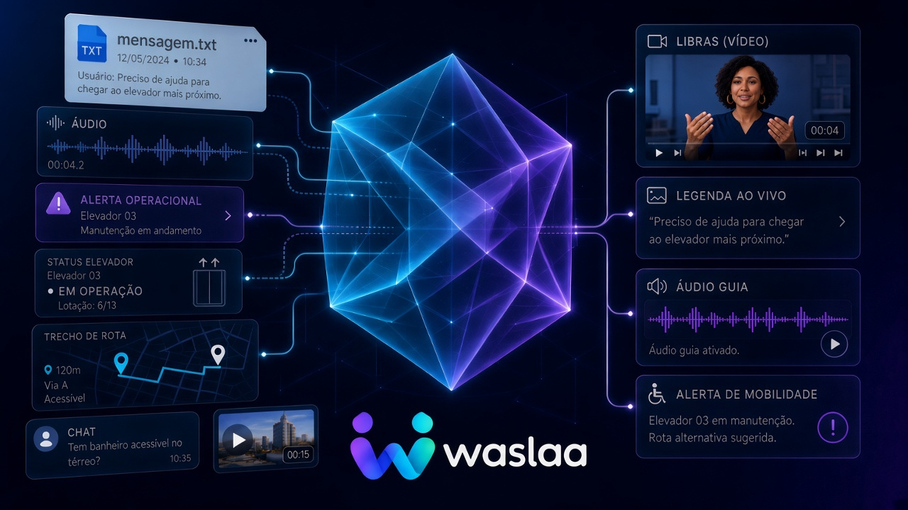
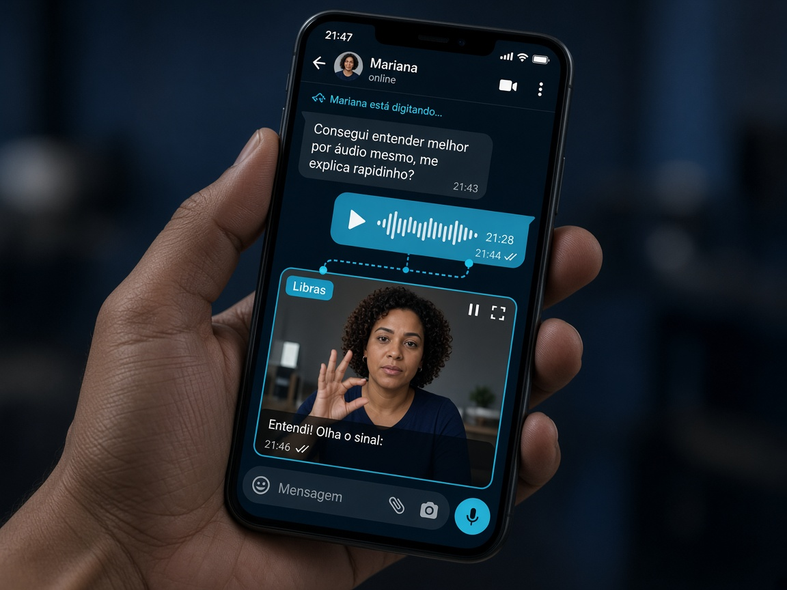
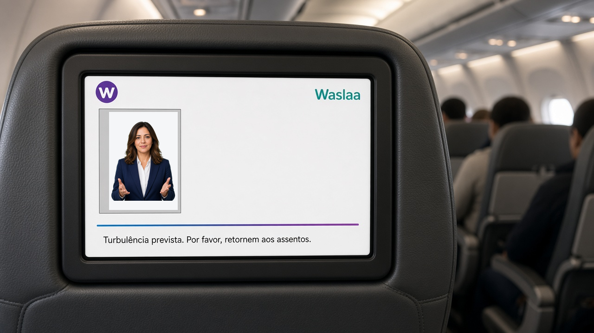

Waslaa API
DisponívelLeve acessibilidade para dentro do seu produto.
Para streaming, cursos online, aplicativos, atendimento e plataformas digitais.

Waslaa
A Waslaa conecta informação e contexto para transformar mensagens em orientações acessíveis, adaptadas às necessidades de cada pessoa e ao momento em que a informação importa.
Áudio, texto, vídeo, mensagens e dados entram pela Waslaa. A plataforma processa a informação e a entrega em formatos acessíveis de acordo com cada experiência.

Informação
Waslaa
Processa e entrega
Experiência acessível

Waslaa API
DisponívelPara streaming, cursos online, aplicativos, atendimento e plataformas digitais.

Waslaa Mensagens
WhatsApp + Telegram
Mensageria para comunicação, atendimento e geração de conteúdos acessíveis.

Waslaa Mobilidade
Em desenvolvimentoInformação acessível para transporte, estações, aeroportos e ambientes de alto fluxo.
Vamos nos encontrar na entrada.
Waslaa App
Visão futuraUma experiência móvel para tornar conversas e informações do cotidiano mais acessíveis.
A mesma infraestrutura pode atender diferentes contextos.
Cursos, aulas e conteúdos digitais.
Serviços e comunicação com clientes.
Conteúdo ao vivo ou sob demanda.
Avisos, rotas e informação operacional.
Acessibilidade integrada a produtos digitais.
Brasil, Chile e Estados Unidos possuem marcos legais que reconhecem o acesso à informação, à comunicação e às línguas de sinais como parte da inclusão. Referências internacionais complementam esse panorama com princípios e diretrizes técnicas de acessibilidade.
A Waslaa transforma princípios de acessibilidade e referências regulatórias em experiências de comunicação mais inclusivas, considerando boas práticas e diretrizes aplicáveis em cada contexto.
Quer tornar seu produto, conteúdo ou canal mais acessível?
Conte o contexto da sua organização. Neste mockup, o contato fica salvo apenas neste navegador.
Demonstração do fluxo disponível: a informação entra e sai em formato acessível.
Entrada
“O módulo começa em cinco minutos. Acesse a sala virtual.”
Saída acessível
Disponível para testes no WhatsApp e no Telegram — canais que as pessoas já usam.
Áudio · 0:12 — “A aula de hoje começa às 19h.”
Waslaa · vídeo em Libras + legenda enviados
A Waslaa trata acessibilidade como direito de acesso à informação. Neste mockup, formulários são salvos apenas no localStorage do seu navegador — nenhum dado é enviado a um servidor.
Documentação jurídica completa será publicada com os primeiros contratos comerciais.
Dados de demonstração persistidos via localStorage.